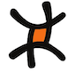

MoSync NFC Example
Hold a tag close to the device to dump it's contents onto the screen.
To write an example tag, click one of the buttons below. Then hold a writable tag close to the device.
Write Web Address >
Write vCard >
<No messages yet>